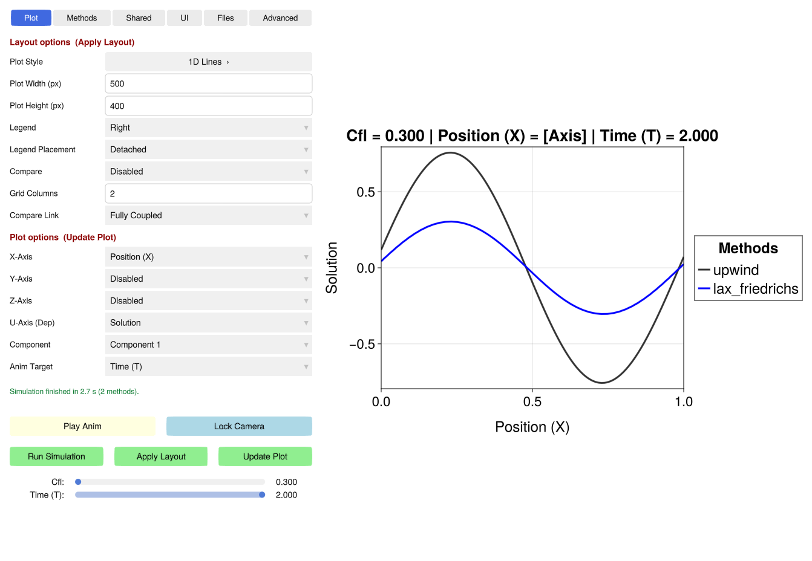

PDEStudio Control Panel Overview

The PDEStudio interface is a single window: the control panel on the left, the plots on the right. The top of the control panel is a row of tabs; below the selected tab, the controls you need all the time are always visible.
The Tabs
| Tab | Contents |
|---|---|
| Plot | One option per row, in two sections. Layout options: the plot style (the button opens a page of every supported style, grouped by Lines, Scatter, Contour, Heatmap and Volume; click one to choose it), plot width and height and the number of grid columns (any number), legend and its placement, and multi-plot comparisons; changes here require a click on Apply Layout to rebuild the plot grid, which is the expensive step (especially in a browser with WGLMakie). Plot options: the independent axes (X, Y, Z), the dependent field (U-Axis), its component and the animation target; changes update the data without rebuilding the plot grid (Update Plot). Details: Rendering. |
| Methods | Every method of the configuration with an active / off button (filter: Show: active / disabled / all) and Edit › for its parameters (also of inactive methods); Order ▲▼ shows the active methods in drawing order (legends, colours, the Methods comparison) with ▲ ▼ to move them. Details: Editors. |
| Shared | The shared parameters of the simulation (config.shared), one row each. The sweep and the other fields of the configuration are in the Advanced tab. Details: Editors. |
| UI | The look and the display names, with a fixed overview: General (fonts, HUD, outliers), Labels (Plot: title and axis labels; display names of components, variables and methods), Axes (every axis variant: 1D, 2D/3D, Z) and Plot styles (one page per plot type). The pages of the active plot are highlighted. |
| Files | The Name / path box with Browse… (the system's file dialog, or an upload in a browser) and the Description of a preset you save; Load a CSV or a Julia configuration file (or drop it anywhere on the window; files that run code ask for a second click), Export and Settings › (export formats, image resolution, animation length, …); Resolution › (points per dimension of the data and of the references); all presets: Save / Reset / Presets › for simulation presets (the physics) and look presets (the visual settings). Presets › lists the saved presets with Apply and Edit ›, which opens the rows of the preset file. Details: File Operations, Presets. |
| Advanced | The SimulationConfig itself, without the studio's conveniences: shared, varied (the sweep), the fields (defaults, reference, …) and the list of all methods, active or not. Values are Julia literals with their types; keys and methods can be added and deleted. Details: Editors. |
The Methods, Shared, UI and Advanced tabs and the pages of the Files tab use the same editor: a page lists entries as rows (name, value, a button), an overview has one button per page.
Always Visible
- Status line (below the tab content): the result of the last action, coloured by outcome: green for done, orange for warnings (e.g. a value that was refused, and why), red for errors. Edits, method changes, presets, simulation runs, CSV loads and exports report here; everything is also written to the Julia log.
- Sliders (at the bottom): one slider per swept parameter and per physical dimension, scaled to the values of the active datasets. Only sliders with a choice to make are shown: unused parameter sliders, dimensions on a plot axis and dimensions the data doesn't have are hidden. Text-valued sweeps (e.g. scheme names) get index sliders that display the swept value. Details: Exploration.
- Camera & Animation: a one-click animation player that sweeps the chosen
Anim Target. Lock Camera freezes the view (2D limits, or 3D azimuth, elevation and bounds) for perfectly stable video exports. - Reactive Triggers: the execution buttons (
Run Simulation,Apply Layout,Update Plot) are tied to a background state machine. When a change requires a backend recalculation, a structural layout change or a redraw, the corresponding button turns yellow to show that the plot is out of sync.
A window opens on the Plot tab. The tab can also be selected from code with PDEStudio.show_tab!(:methods) (:plot, :methods, :shared, :ui, :files, :advanced).